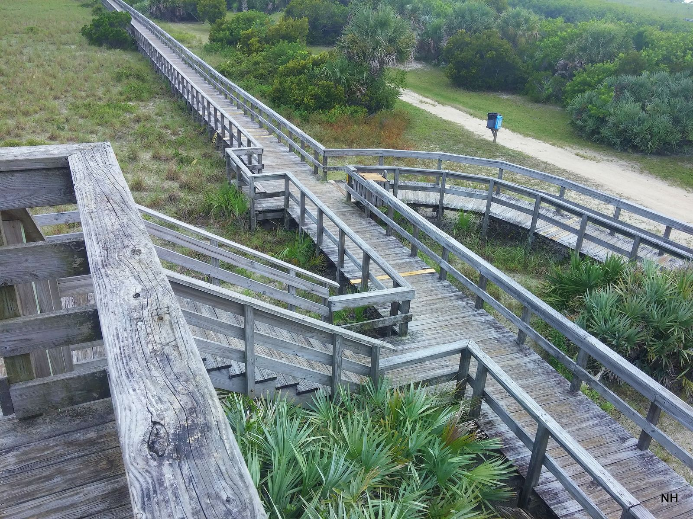

Independent public record project. Sources linked throughout. Last reviewed October 2026.

Beach Access Today
These are separate regimes. They are not one rule.
Ordinance 2017-10, including the uses listed for it, is on the Timeline. This page does not state that ordinance as current law.
Visit South Walton tells visitors the current beach rules. This site explains the history, the votes, and the cases.
Checked October 4, 2026, the tourism pages describe the 2023 settlement and do not mention the February 18, 2026 opinion. No Walton County page located for this record explains the legal status after that opinion.
Dry sand is not public as a blanket rule, and it is not private as a blanket rule. Public beaches, state parks, and signed settlement beaches are different.
1. Wet sand
Visit South Walton, checked October 4, 2026, says you may traverse the wet sand for the entire 26 miles, from a lawful entry.
The legal line in Florida is the mean high-water line. That is not the same as the visible wet/dry line. The visible wet/dry line moves with the tide. It is not the mean high-water line.
Florida Constitution article X, section 11, as quoted in the April 23, 2025 Senate staff analysis: title to lands under navigable waters that have not been alienated, including beaches below mean high-water lines, is held by the state in trust.
Section 177.28, as quoted in that same analysis, makes the mean high-water line the boundary between state foreshore and privately owned upland.
The settlement says the 20-foot uses apply whether that strip is landward or seaward of mean high water. Those uses are stated in section 3 and on the Timeline.
Tourism says more than 50 beach and bay accesses. Neighborhood accesses are walk-up boardwalks. Regional accesses have restrooms and parking. The FAQ says nine regional accesses. The map legend says 11. The two pages disagree.
Three state parks with beach access and an entry fee: Topsail Hill Preserve, Grayton Beach, and Deer Lake.
Visit South Walton's map is the visitor guide, not this site's parcel record. Checked October 4, 2026, the access map page stamp read "Latest map update: Sep 21, 2026." On that guide, red areas, and the page names Seaside and Rosemary Beach, are exclusive to guests of those places. Private deeded access means the booking's own access.
Only for owners who signed. This page does not list signers, and it does not say which parcels these are. Exhibit A in the framework text is the participating-parcel list. This record does not have a verified executed copy of who signed.
The public may use the area 20 feet landward of the wet/dry sand line. That area is called the Transitory Zone. It cannot extend landward of an existing erosion control line between Topsail Hill Preserve State Park and the Okaloosa County line. The 20-foot uses apply whether that strip is landward or seaward of mean high water.
Allowed uses only
Walking, running, and jogging.
Access to the wet sand and water for swimming, surfing, surf fishing, and skimboarding.
Sunbathing uses, meaning standing, sitting, or laying on the sand, a towel, or a privately owned chair that is not tied to a vendor. Only between 9:00 a.m. and 4:00 p.m. Central.
Those sitting uses yield if the owner is actively using the area. The cap of one person per five feet of Gulf frontage applies to the sitting uses, not to walking. Owners, renters, and guests keep full use of their own parcel, including the zone. The public cannot enter a participating parcel to reach the zone. Settlement rights supersede any customary use that could exist on those parcels. Customary use on a settling parcel is "now and forevermore moot."
The settlement text also says the county will keep chairs and umbrellas off the sand seaward of the Transitory Zone, and that owner rights in the zone are superior.
Tourism's tan layer, also called an owner-managed private beach, is this subset. It is not every private beach. Their FAQ is looser than the agreement. They apply the density cap more broadly, and they mention vendor chair rental. On the tan layer, their FAQ says owners, guests, and renters have full use and may relocate or remove beachgoers who break the rules. The tourism page is the visitor guide. This page follows the settlement text.
Wet-sand travel only, from a lawful entry. This record does not say which parcels these are. Visit South Walton says the county is still surveying and cannot yet give exact public and private coordinates.
Where to ask
Printed on the Visit South Walton beach access FAQ, for where to ask: tourism at (800) 822-6877 or (850) 267-1216 for general access, and the county attorney for the county settlement.
Nourishment
An erosion control line is a surveyed boundary set before a beach restoration project. Once the survey is recorded, title seaward of that line is deemed vested in the state. Title landward stays with the upland owner. Sand added landward of the pre-project line remains the upland owner's, and is subject to a public easement for traditional uses of the sandy beach. The statute says the state is not trying to take land it does not already hold.
Chapter 2025-178, section 2, is a separate shortcut for some Gulf counties. It says certain restoration projects do not require a public easement, and that additions seaward of the erosion control line remain state sovereignty lands. The act does not name Walton County. This page does not treat Walton County as covered by section 2. The population estimate and the municipality count were not checked.